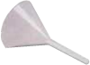

LDM
Contenido Maletín "K"
Maletín "K"
Maletín "K1"
IMAGEN |
ARTICULO |
CANTIDAD |
UBICACIÓN SUGERIDA (MALETÍN) |
Caja petri de 100 x 10 |
5 |
K |
|
Vaso comunicante con base de madera |
1 |
K |
|
 |
Embudo de plástico 6 cm de diámetro |
1 |
K |
Lámpara de alcohol 100 ml |
5 |
K |
|
Lupa de 7.5 cm de diámetro con mango |
1 |
K |
|
Tapones de goma, NR, rojos, diámetro superior 12 mm. diámetro inferior 8 mm. |
10 |
K1 |
|
Tapones de goma, NR, rojos, diámetro superior 18 mm. diámetro inferior 14 mm. |
10 |
K1 |
|
Tapones de goma, NR, rojos, diámetro superior 32 mm. diámetro inferior 26 mm. |
5 |
K1 |